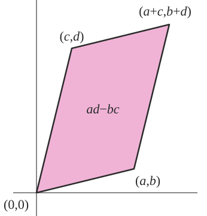

Linear algebra#
Some notes on linear algebra - basics, matrix calculus, norms, and eigendecompositions. Section numbers refer to Strang's "Linear Algebra and Its Applications".
About this chapter
The linear algebra used across the rest of the book. The first section collects definitions and matrix facts: inner products, determinants, rank, inverses and pseudo-inverses, and the four fundamental subspaces. Matrix calculus follows, with worked gradients of \(a^Tx\), \(x^TAx\) and \(\log\det X\).
The second half is norms and eigenstuff. Eigenvalues come first (Strang 5.1), then the two decompositions: \(A = Q\Lambda Q^T\) for symmetric matrices and the SVD \(X = U\Sigma V^T\) for any matrix. Most of the norms, the condition number and the pseudo-inverse are easiest to read off the singular values, so the SVD section ties the chapter together.
Linear basics#
Definitions used throughout: the trace inner product between matrices, linearity, determinants, independence, and the facts about rank, inverses and subspaces that later sections lean on.
Notation#
\(x \preceq y\) - these are vectors and x is less than y elementwise
\(X \preceq Y\) - matrices, \(Y-X\) is PSD
\(v^TXv \leq v^TYv \:\: \forall v\)
Linearity#
inner product \(<X, Y> = \operatorname{tr}(X^TY) = \sum_i \sum_j X_{ij} Y_{ij}\)
like inner product if we collapsed into big vector
linear
symmetric
gives angle back
linear
superposition \(f(x+y) = f(x)+f(y) \)
proportionality \(f(k\cdot x) = k \cdot f(x)\)
bilinear just means a function is linear in 2 variables
vector space
closed under addition
contains identity
det - sum of products including one element from each row / column with correct sign
absolute value = area of parallelogram made by rows (or cols)

Fig. 5 Figure 1. The rows \((a, b)\) and \((c, d)\) span a parallelogram. Its area is \(|ad - bc|\), the absolute value of the determinant.#
lin independent: \(c_1x_1+c_2x_2=0 \implies c_1=c_2=0\)
cauchy-schwartz inequality: \(\vert x^T y\vert \leq \vert \vert x\vert \vert _2 \vert \vert y\vert \vert \vert _2\)
implies triangle inequality: \(\vert \vert x+y\vert \vert ^2 \leq (\vert \vert x\vert \vert + \vert \vert y\vert \vert )^2\)

Matrix properties#
A matrix is invertible exactly when its determinant is nonzero and its null space is just 0. When it isn’t square, the pseudo-inverse takes its place, \(A^\dagger = (A^T A)^{-1} A^T\) when the columns are independent. The range and null space are orthogonal complements, which fixes their dimensions at \(r\) and \(n - r\).
\(x^TAx = \operatorname{tr}(xx^TA)\)
nonsingular = invertible = nonzero determinant = null space of zero
only square matrices
rank of mxn matrix- max number of linearly independent columns / rows
rank==m==n, then nonsingular
ill-conditioned matrix - matrix is close to being singular - very small determinant
inverse
orthogonal matrix: all columns are orthonormal
\(A^{-1} = A^T\)
preserves the Euclidean norm \(\vert \vert Ax\vert \vert _2 = \vert \vert x\vert \vert _2\)
if diagonal, inverse is invert all elements
inverting 3x3 - transpose, find all mini dets, multiply by signs, divide by det
psuedo-inverse = Moore-Penrose inverse \(A^\dagger = (A^T A)^{-1} A^T\)
if A is nonsingular, \(A^\dagger = A^{-1}\)
if rank(A) = m, then must invert using \(A A^T\)
if rank(A) = n, then must use \(A^T A\)
inversion of matrix is \(\approx O(n^3)\)
inverse of psd symmetric matrix is also psd and symmetric
if A, B invertible \((AB)^{-1} = B^{-1} A^{-1}\)
orthogonal complement - set of orthogonal vectors
define R(A) to be range space of A (column space) and N(A) to be null space of A
R(A) and N(A) are orthogonal complements
dim \(R(A)\) = r
dim \(N(A)\) = n-r
dim \(R(A^T)\) = r
dim \(N(A^T)\) = m-r
adjoint - compute with mini-dets
\(A^{-1} = adj(A) / \det(A)\)
Schur complement of \(X = \begin{bmatrix} A & B \\ C & D\end{bmatrix}\)
\(M/D = A - BD^{-1}C\)
\(M/A = D-CA^{-1}B\)
\(X \succeq 0 \iff M/D \succeq 0\)
Matrix calc#
The trick behind every example below: write out \(f(x + \Delta)\) and keep the part that is linear in \(\Delta\). For scalar functions of a matrix, rewriting a quadratic form as a trace often makes the derivative a one-liner.
overview: imagine derivative \(f(x + \Delta)\)
function f: \(\text{anything} \to \mathbb{R}^m\)
gradient vector \(\nabla_A f(\mathbf{A})\)- partial derivatives with respect to each element of A (vector or matrix)
gradient = \(\frac{\partial f}{\partial A}^T\)
these next 2 assume numerator layout (numerator-major order, so numerator constant along rows)
function f: \(\mathbb{R}^n \to \mathbb{R}^m\)
Jacobian matrix: \(\mathbf J = \begin{bmatrix} \dfrac{\partial \mathbf{f}}{\partial x_1} & \cdots & \dfrac{\partial \mathbf{f}}{\partial x_n} \end{bmatrix}= \begin{bmatrix} \dfrac{\partial f_1}{\partial x_1} & \cdots & \dfrac{\partial f_1}{\partial x_n}\\ \vdots & \ddots & \vdots\\ \dfrac{\partial f_m}{\partial x_1} & \cdots & \dfrac{\partial f_m}{\partial x_n} \end{bmatrix}\) - this is dim(f) x dim(x)
function f: \(\mathbb{R}^n \to \mathbb{R}\)
2nd derivative is Hessian matrix
\(\bold H = \nabla^2 f(x)_{ij} = \frac{\partial^2 f(x)}{\partial x_i \partial x_j} = \begin{bmatrix} \dfrac{\partial^2 f}{\partial x_1^2} & \dfrac{\partial^2 f}{\partial x_1\,\partial x_2} & \cdots & \dfrac{\partial^2 f}{\partial x_1\,\partial x_n} \\[2.2ex] \dfrac{\partial^2 f}{\partial x_2\,\partial x_1} & \dfrac{\partial^2 f}{\partial x_2^2} & \cdots & \dfrac{\partial^2 f}{\partial x_2\,\partial x_n} \\[2.2ex] \vdots & \vdots & \ddots & \vdots \\[2.2ex] \dfrac{\partial^2 f}{\partial x_n\,\partial x_1} & \dfrac{\partial^2 f}{\partial x_n\,\partial x_2} & \cdots & \dfrac{\partial^2 f}{\partial x_n^2}\end{bmatrix}\)
examples
\(\nabla_x a^T x = a\)
\(\nabla_x x^TAx = 2Ax\) (if A symmetric, else \((A+A^T)x)\))
\(\nabla_x^2 x^TAx = 2A\) (if A symmetric, else \(A+A^T\))
\(\nabla_x \log \: \det X = X^{-1}\)
we can calculate derivs of quadratic forms by calculating derivs of traces
\(x^TAx = \operatorname{tr}[x^TAx] = \operatorname{tr}[xx^TA]\)
\(\implies \frac{\partial}{\partial A} x^TAx = \frac{\partial}{\partial A} \operatorname{tr}[xx^TA] = [xx^T]^T = xx^T\)
useful result: \(\frac{\partial}{\partial A} \log\vert A\vert = A^{-T}\)
Norms#
Vector norms first, then matrix norms. Several matrix norms are vector norms applied to the singular values: the nuclear norm sums them, the Frobenius norm is their \(L_2\) norm, and the spectral norm is the largest.
def
nonnegative
definite f(x) = 0 iff x = 0
proportionality (also called homogenous)
triangle inequality
properties
convex
Vector norms#
The \(L_p\) norms, the quadratic norm \(\|x\|_P\) defined by a positive definite \(P\), and the dual norm, the largest \(z^T x\) over the unit ball of the original norm. The \(L_1\) and \(L_\infty\) norms are duals of each other and \(L_2\) is its own dual.
\(L_p-\)norms: \(\vert \vert x\vert \vert _p = (\sum_{i=1}^n \vert x_i\vert ^p)^{1/p}\)
\(L_0\) norm - number of nonzero elements (this is not actually a norm!)
\(\vert \vert x\vert \vert _1 = \sum \vert x_i\vert\)
\(\vert \vert x\vert \vert _2\) - Euclidean norm
\(\vert \vert x\vert \vert _\infty = \max_i \vert x_i\vert\) - also called Cheybyshev norm
quadratic norms
P-quadratic norm: \(\vert \vert x\vert \vert _P = (x^TPx)^{1/2} = \vert \vert P^{1/2} x \vert \vert _2\) where \(P \in S_{++}^n\)
dual norm
given a norm \(\vert \vert \cdot \vert \vert\), dual norm \(\vert \vert z\vert \vert _* = \sup\{ z^Tx \: \vert \: \vert \vert x\vert \vert \leq 1\}\)
dual of the dual is the original
dual of Euclidean is just Euclidean
dual of \(l_1\) is \(l_\infty\)
dual of spectral norm is some of the singular values
Matrix norms#
schatten p-norms: \(\vert \vert X\vert \vert _p = (\sum \sigma^p_i(A) )^{1/p}\) - note this is nice for organization but this p is never really mentioned
p=1: nuclear norm = trace norm: \(\vert \vert X\vert \vert _* = \sum_i \sigma_i\)
p=2: frobenius norm = euclidean norm: \(\vert \vert X\vert \vert _F^2 = \sqrt {\sum_{ij} X_{ij}^2} = \sqrt{\sum_i \sigma_i^2}\)
like vector \(L_2\) norm
p=\(\infty\): spectral norm = \(\mathbf{L_2}\)-norm (of a matrix) = \(\vert \vert X\vert \vert _2 = \sigma_\text{max}(X)\)
entrywise norms
sum-absolute-value norm (like vector \(l_1\))
maximum-absolute-value norm (like vector \(l_\infty\))
operator norm
let \(\vert \vert \cdot\vert \vert _a\) and \(\vert \vert \cdot \vert \vert _b\) be vector norms
operator norm \(\vert \vert X\vert \vert _{a,b} = \sup\{ \vert \vert Xu\vert \vert _a \: \vert \: \vert \vert u\vert \vert _b \leq 1 \}\)
represents the maximum stretching that X does to a vector u
if using p-norms, can get Frobenius and some others
Eigenstuff#
Section numbers follow Strang. For a symmetric matrix the eigenvalues give the determinant (their product), the trace (their sum) and the extremes of \(x^TAx / x^Tx\).
Eigenvalues intro - Strang 5.1#
An eigenvector keeps its direction under \(A\): \(Ax = \lambda x\), so the eigenvalues are the roots of \(\det(A - \lambda I) = 0\). For symmetric matrices they give the determinant, trace, \(L_2\) and Frobenius norms, and positive semi-definite matrices are the symmetric ones with no negative eigenvalues.
elimination changes eigenvalues
eigenvector application to diff eqs \(\frac{du}{dt}=Au\)
soln is exponential: \(u(t) = c_1 e^{\lambda_1 t} x_1 + c_2 e^{\lambda_2 t} x_2\)
eigenvalue eqn: \(Ax = \lambda x \implies (A-\lambda I)x=0\)
\(\det(A-\lambda I) = 0\) yields characteristic polynomial
eigenvalue properties
0 eigenvalue \(\implies\) A is singular
eigenvalues are on the main diagonal when the matrix is triangular
expressions when \(A \in \mathbb{S}\)
\(\det(A) = \prod_i \lambda_i\)
\(\operatorname{tr}(A) = \sum_i \lambda_i\)
\(\vert \vert A\vert \vert _2 = \max \vert \lambda_i \vert\)
\(\vert \vert A\vert \vert _F = \sqrt{\sum \lambda_i^2}\)
\(\lambda_{\max} (A) = \sup_{x \neq 0} \frac{x^T A x}{x^T x}\)
\(\lambda_{\min} (A) = \inf_{x \neq 0} \frac{x^T A x}{x^T x}\)
defective matrices - lack a full set of eigenvalues
positive semi-definite: \(A \in R^{nxn}\)
basically these are always symmetric \(A=A^T\)
all eigenvalues are nonnegative
if \(\forall x \in R^n, x^TAx \geq 0\) then A is positive semi definite (PSD)
like it curves up
Note: \(x^TAx = \sum_{i, j} x_iA_{i, j} x_j\)
if \(\forall x \in R^n, x^TAx > 0\) then A is positive definite (PD)
PD \(\to\) full rank, invertible
PSD + symmetric \(\implies\) can be written as Gram matrix \(G = X^T X \)
if X full rank, then \(G\) is PD
PSD notation
\(S^n\) - set of symmetric matrices
\(S^n_+\) - set of PSD matrices
\(S^n_{++}\) - set of PD matrices
Strang 5.2 - diagonalization#
A symmetric matrix factors as \(Q\) \(\Lambda\) \(Q^T\) with orthonormal eigenvectors and the eigenvalues on the diagonal. In that basis powers, inverses and square roots act on each eigenvalue separately.
diagonalization = eigenvalue decomposition = spectral decomposition
assume A (nxn) is symmetric
\(A = \cblue{Q} \corange{\Lambda} \cblue{Q^T}\)
Q := eigenvectors as columns, Q is orthonormal
\(\Lambda\) := eigenvalues on diagonal
only diagonalizable if n independent eigenvectors
not related to invertibility
eigenvectors corresponding to different eigenvalues are lin. independent
other Q matrices won’t produce diagonal
there are always n complex eigenvalues
orthogonal matrix \(Q^TQ=I\)
examples
if X, Y symmetric, \(\operatorname{tr}(YX) = \operatorname{tr}(Y \sum \lambda_i q_i q_i^T)\)
lets us easily calculate \(A^2\), \(\sqrt{A}\)
eigenvalues of \(A^2\) are squared, eigenvectors remain same
eigenvalues of \(A^{-1}\) are inverse eigenvalues
eigenvalue of rotation matrix is \(i\)
eigenvalues for \(AB\) only multiply when A and B share eigenvectors
diagonalizable matrices share the same eigenvector matrix S iff \(AB = BA\)
generalized eigenvalue decomposition - for 2 symmetric matrices
\(A = V \Lambda V^T\), \(B=VV^T\)
Strang 6.3 - singular value decomposition#
Every matrix, square or not, factors into a rotation, a stretch along the axes and another rotation. The stretches are the singular values.
SVD for any nxp matrix: \(X=\cblue{U} \corange{\Sigma} \cgreen{V^T}\)
U columns (nxn) are eigenvectors of \(XX^T\)
columns of V (pxp) are eigenvectors of \(X^TX\)
r singular values on diagonal of \(\corange{\Sigma}\) (nxp) - square roots of nonzero eigenvalues of both \(XX^T\) and \(X^TX\)
like rotating, scaling, and rotating back
SVD ex. \(A=UDV^T \implies A^{-1} = VD^{-1} U^T\)
\(X = \sum_i \sigma_i u_i v_i^T\)
properties
for PD matrices, \(\Sigma=\Lambda\), \(U\Sigma V^T = Q \Lambda Q^T\)
for other symmetric matrices, any negative eigenvalues in \(\Lambda\) become positive in \(\Sigma\)
applications
very numerically stable because U and V are orthogonal matrices
condition number of invertible nxn matrix = \(\sigma_{\max} / \sigma_{\min}\)
\(A=\cblue{U}\corange{\Sigma} \cgreen{V^T} = \cblue{u_1} \corange{\sigma_1} \cgreen{v_1^T} + ... + \cblue{u_r} \corange{\sigma_r} \cgreen{v_r^T}\)
we can throw away columns corresponding to small \(\corange{\sigma_i}\)
pseudoinverse \(A^+ = V \Sigma^+ U^T\)
Strang 5.3 - difference eqs and power \(A^k\)#
In repeated multiplication \(u_{k+1} = A u_k\), \(A^k\) scales each eigenvector by \(\lambda_i^k\). So the eigenvalue magnitudes decide whether \(u_k\) dies out, stays bounded or blows up, and the largest one eventually dominates, which is the power method.
compound interest
solving for fibonacci numbers
Markov matrices
steady-state Ax = x
corresponds to \(\lambda = 1\)
stability of \(u_{k+1} = A u_k\)
stable if all eigenvalues satisfy \(\vert \lambda_i\vert\) <1
neutrally stable if some \(\vert \lambda_i\vert =1\)
unstable if at least one \(\vert \lambda_i\vert\) > 1
Leontief’s input-output matrix
Perron-Frobenius thm - if A is a positive matrix (positive values), so is its largest eigenvalue and every component of the corresponding eigenvector is also positive
useful for ranking, etc.
power method: want to find eigenvector \(v\) corresponding to largest eigenvalue
\(v = \underset{n \to \infty}{\lim} \frac{A^n v_0}{\vert A^nv_0\vert }\) where \(v_0\) is nonnegative
Key ideas
The four fundamental subspaces pair up as orthogonal complements, with dimensions \(r\), \(n - r\), \(r\) and \(m - r\).
Matrix gradients come from keeping the part of \(f(x + \Delta)\) linear in \(\Delta\), often after rewriting a quadratic form as a trace.
Many matrix norms are vector norms of the singular values, such as nuclear (sum), Frobenius (\(L_2\)) and spectral (max).
A symmetric matrix is \(Q \Lambda Q^T\) with orthonormal eigenvectors, and it is PSD exactly when every eigenvalue is nonnegative.
Every matrix has an SVD \(U \Sigma V^T\), and the singular values give the condition number \(\sigma_{\max}/\sigma_{\min}\), and terms with small \(\sigma_i\) can be thrown away.
In \(u_{k+1} = A u_k\) the eigenvalue magnitudes decide stability, and the power method finds the eigenvector of the largest one.